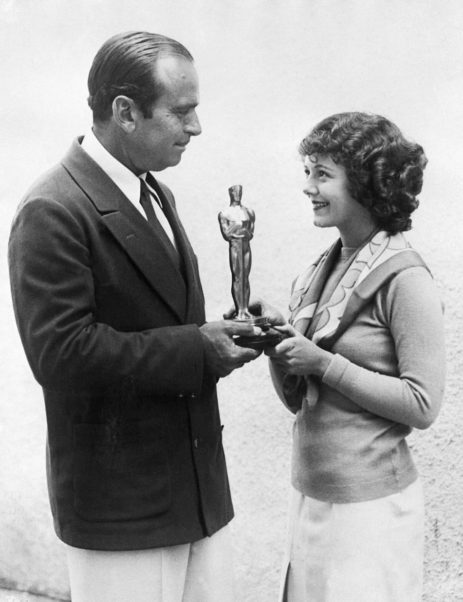
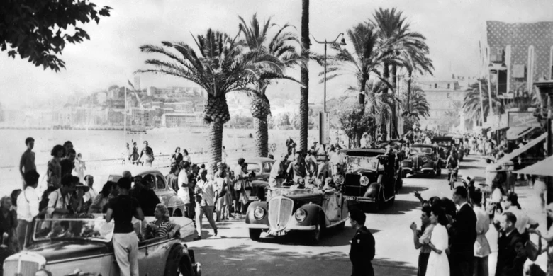
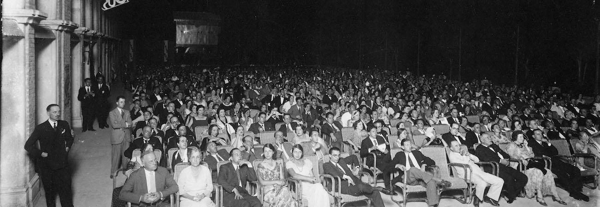
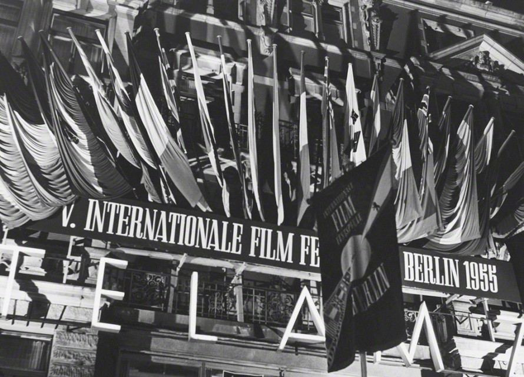
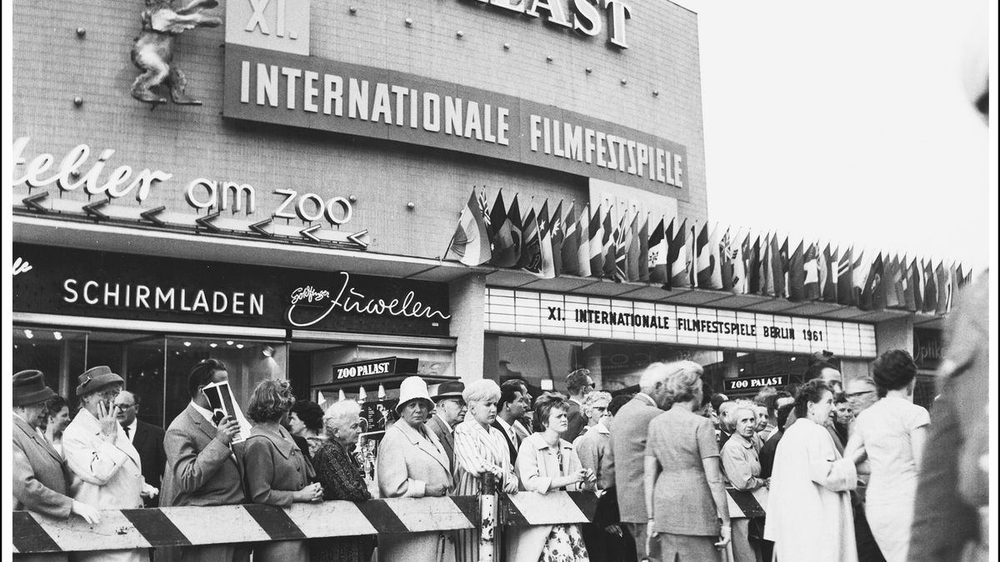
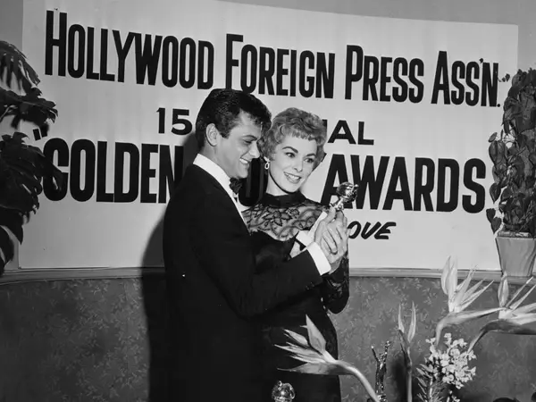

아카데미(Academy Awards) 혹은 오스카(the Oscars)는 미국의 영화 시상식이다. 주로 이 상은 영화 예술 과학 아카데미가 수여한다. 전년도에 발표된 미국의 영화 및 미국에서 상영된 외국 영화를 대상으로 우수한 작품과 그 밖의 업적에 대하여 매년 3월 둘째 일요일에 시상한다. 전 세계에서 열리는 영화 행사 중에서 최고 수준의 위상을 지닌 것으로 대우받는다.
제1회 아카데미상 시상식은 1929년 5월 16일 할리우드의 루즈벨트 호텔에서 270여 명의 영화계 관계자들이 참석한 가운데 약 15분간 거행되었다. 첫번째 아카데미상은 고작 20여 명의 멤버로 구성된 위원회가 12개 부문의 수상작을 선출하였고, 한 해의 작품을 아우르는 지금과는 달리 1927년과 1928년도의 2년 동안 제작된 영화를 대상으로 심사하였다. 시상식 입장권 가격은 5달러였는데 이를 오늘날의 가치로 환산하면 약 74달러에 달한다. 비교적 조촐한 규모였던 아카데미 시상식은 그로부터 불과 3년 후인 1932년에는 100명의 위원들이 선출에 임하는 대규모 시상식으로 성장하였다.
제1회 아카데미상 수상자는 시상식 석 달 전에 미리 언론에 공개되었다. 이는 1930년 제2회 아카데미상부터 시상식 당일 밤 11시에 각 언론사에 결과를 일제히 배포하는 방식으로 변경되어 약 10여년간 유지되었다. 그러나 1940년 로스앤젤레스 타임스가 시상식이 거행되기도 전에 수상자를 발표하는 사건이 벌어지면서, 이듬해 1941년부터 아카데미 측이 수상자의 이름을 일절 선공개하지 않는 방식으로 바뀌어 오늘에 이르고 있다.
처음 15년간은 루즈벨트 호텔에서 거행되다가 1944년부터 극장 상영에 이익이 되도록 시상식을 극장에서 거행하였고, 1969년부터는 LA 카운티 뮤직 센터 '도로시 챈들러 파빌론'에서 거행되었다. 이후 1988년부터는 슈라인 오디토리움(Shrine Civic Auditorium)과 번갈아가며 진행되었으며, 2002년에 할리우드에 코닥 극장에서 아카데미 전용 시상식장으로 사용되었다. 2013년부터는 코닥 극장의 명칭이 돌비 극장으로 바뀌어 진행된다.
1953년 시상식부터는 NBC-TV에서 최초로 방송 전파를 탔으며, 현재는 ABC-TV에서 방영하고 있다. 1957년 제29회 아카데미상부터는 아카데미 국제영화상 부문이 추가되어 비영어권 영화도 시상하기 시작하였고, 2002년 제74회 아카데미상부터는 단편 부문만 존재하였던 애니메이션 영화에 장편 애니메이션 작품상 부문이 추가되었다. 한편으로 시상식의 마지막 발표는 항상 아카데미 작품상이 장식하는데 이는 1973년부터 도입된 구성이다. 그 동안 수상부문과 부문별 명칭은 여러 차례 변동이 있어왔다. 이를테면 제83회 아카데미상에서는 모두 24개 부문의 경쟁부문 시상식과 2개 부문의 특별명예상 시상식이 있었다.
칸 영화제는 1939년 프랑스 정부가 파시즘에 대응하기 위해 영화 자유와 문화 다양성을 강조하며 창설했지만, 제2차 세계대전 발발로 인해 첫 회는 취소되었다. 이후 1946년 9월 칸 카지노에서 21개국이 참가한 가운데 공식적으로 제1회 영화제가 열리며 역사적인 시작을 알렸다.
초기에는 다양한 상이 혼재했지만, 1955년 현재까지 이어지는 최고상인 황금종려상(Palme d'Or)이 제정되며 칸 영화제의 상징성을 확립했다. 이후 1969년에는 프랑스 5월 혁명과 학생운동의 영향으로 감독 주간(Directors' Fortnight)이 신설되어 예술성과 독립성을 강조한 섹션이 탄생했다.
1978년에는 경쟁 부문과 차별화된 시선을 제공하는 '주목할 만한 시선'(Un Certain Regard)과 신인 감독의 첫 작품을 위한 황금 카메라상(Caméra d'Or)이 추가되었고, 1998년에는 전 세계 영화학교 학생들을 위한 '시네퐁다시옹(Cinéfondation)'이 만들어졌다.
이와 함께 칸 영화제는 예술뿐 아니라 산업적 측면도 강조하기 위해 1959년부터 '영화 시장(Marché du Film)'을 운영하며 세계 각국의 영화산업 관계자들이 네트워킹하고 거래하는 공간을 제공하고 있다.
1990년대 이후 디지털 기술의 발전과 함께 칸은 복원 영화 섹션인 '칸 클래식(Cannes Classics)', 단편영화 경쟁 부문인 '칸 쿠르 메트라쥬(Cannes Court Métrage)'를 신설하며 영화 형식의 다양성과 역사적 보존 가치도 아우르게 되었다.
칸 영화제는 사회적, 정치적 메시지에 민감하게 반응하는 공간이기도 하다. 수많은 영화들이 인권, 전쟁, 검열, 성평등 등의 이슈를 다루며, 영화제를 통해 사회적 연대를 형성하고 국제적 대화를 촉진하는 역할을 하고 있다.
2020년에는 코로나19 팬데믹으로 인해 영화제가 취소되었지만, 2021년부터 재개되며 다시 활기를 되찾았고, 2022년에는 우크라이나 전쟁에 반대하는 입장을 분명히 하며 특정 러시아 언론의 출입을 제한하기도 했다.
칸은 레드카펫과 셀러브리티, 글래머로 대표되는 화려한 이미지와는 별개로, 영화 예술의 독립성과 표현의 자유, 다양성 수용이라는 본질을 꾸준히 지켜왔다. 심사위원단은 해마다 전 세계 다양한 배경의 영화인들로 구성되며, 젠더 균형과 문화 다양성도 고려된다.
현재 칸 영화제는 약 12일간 개최되며 경쟁 부문뿐 아니라 다양한 병행 행사와 포럼, 교육 프로그램 등이 동시 운영된다. 이로써 칸은 단순한 시상식이 아닌, 영화 생태계 전반을 아우르는 종합 문화 축제로 자리매김하고 있다.
베니스 국제영화제(Venice International Film Festival)는 매년 8월 말 또는 9월 초 이탈리아 베니스의 리도(Lido) 지역에서 개최되는 세계에서 가장 오래된 영화제이다. 본 영화제는 베니스 비엔날레의 공식 프로그램의 일환으로 진행되며, 전통 있는 장소와 예술적 권위가 결합된 행사로, 영화계 엘리트들에게 오랜 기간 동안 사랑받아 왔다.
해당 영화제는 1932년 '영화 예술 전시회(Esposizione d'Arte Cinematografica)'라는 명칭으로 설립되었으며, 당시 이탈리아 파시스트 정부의 후원 아래 베니스 비엔날레의 구성 요소 중 하나로 처음 개최되었다. 초창기 상영작은 경쟁 없이 전시 형태로 진행되었으며, 개막작은 미국 감독 루벤 마물리안의 <지킬 박사와 하이드 씨>(1931)였다. 당시 함께 상영된 대표작으로는 <그랜드 호텔>(1932), <더 챔프>(1931) 등이 있다.
1934년부터는 경쟁 부문이 도입되었으며, 19개국이 참가한 가운데 '코파 무솔리니(Coppa Mussolini)'라는 명칭의 상이 최우수 외국 영화와 이탈리아 영화 부문에 각각 수여되었다.
영화제는 이후 해마다 개최되었으며, 1935년에는 영화제의 창립자인 주세페 볼피 백작의 이름을 따서 최우수 남우주연상과 여우주연상에 '볼피 컵(Coppa Volpi)'이 제정되었다.
제2차 세계대전 이후 '코파 무솔리니'는 폐지되었으며, 그 자리를 최고의 작품에 수여되는 '레오네 도로(Leone d'Oro, 황금사자상)'가 대신하게 되었다. 그러나 1968년에는 예술의 상업화에 대한 비판과 사회적 움직임이 고조되며 학생들의 반발이 일어났고, 이로 인해 1969년부터 1979년까지 10년 동안 영화제에서 공식적인 시상이 중단되는 사태가 발생했다. 이 기간 동안 영화제의 국제적 명성 또한 일시적으로 감소하였다.
그러나 1980년대 이후 영화제는 다시 안정을 찾으며 명성을 회복하였고, 21세기 초반에 들어서면서는 매년 150편 이상의 영화를 상영하고 연간 50,000명 이상의 영화 전문가와 관람객이 참여하는 세계적 규모의 영화제로 성장하였다.
영화제의 대표적 수상 부문은 레오네 도로와 볼피 컵 외에도 감독상, 단편영화상, 그리고 레오네 도르겐토(Leone d'Argento, 실버 라이언) 등 다양하다. 특히 실버 라이언은 황금사자 후보작 중 준우수작으로 평가되는 영화에게 수여된다.
베니스 영화제를 통해 세계적으로 주목받은 대표적 수상작으로는 구로사와 아키라 감독의 <라쇼몬>(1950), 알랭 레네의 <마리엔바드에서의 마지막 해>(1961), 앙 리 감독의 <브로크백 마운틴>(2005) 등이 있다.
오늘날 베니스 영화제는 영화 산업 내 예술성과 전통을 상징하는 대표적 플랫폼으로서, 매년 세계 각국의 유망한 작품과 감독들이 경쟁과 교류를 위해 모이는 국제적인 문화 행사의 장으로 자리매김하고 있다.
베를린 국제영화제(Berlin International Film Festival, Berlinale)는 매년 2월 중순 독일 베를린에서 개최되는 세계 최대 규모의 영화제 중 하나로, 국제 영화계에서 높은 명성과 영향력을 자랑한다. 1951년에 독일의 통일을 기원하는 의미에서 시작되었으며, 약 10일 동안 400여편의 장단편 영화가 상영된다. 3대 영화제 중에서 가장 비평가 위주의 예술작품 발굴을 중시하는 영화제로 꼽힌다.
이 영화제는 제2차 세계대전 이후 서베를린에 주둔하던 미군 영화 장교 오스카 마르타이(Oscar Martay)의 제안에서 비롯되었다. 그는 1950년 베를린 상원과 독일 영화 산업 관계자들로 구성된 조직위원회를 설립하였고, 이듬해인 1951년 6월 첫 번째 영화제가 공식 개최되었다. 개막작은 알프레드 히치콕의 <레베카>(1940)였으며, 주연배우 조안 폰테인이 참석해 화제를 모았다. 마르타이는 이러한 기여를 인정받아 영화제의 최고 영예인 황금곰상(Golden Bear)을 수상하였다.
제1회 영화제에서는 <신데렐라>(1951)가 최고의 음악 영화로 황금곰상을 수상하였으며, 관객 투표를 통해 선정된 '그로저 브론즈텔러(Großer Bronzeteller)'라는 이름의 특별상도 함께 수여되었다.
베를린 영화제는 이후 빠르게 성장하였고, 상영 작품 수는 400편 이상으로 확대되었으며 영화제 기간은 약 10일간 유지되었다. 수상 부문 또한 다양화되어, 최고상인 황금곰 외에도 은곰상(Silberner Bär, Silver Bear)이 감독상, 남우주연상, 여우주연상, 단편 부문 등으로 세분화되었다.
1978년에는 영화제 개최 시기를 기존의 6월에서 현재의 2월로 조정하였으며, 이로 인해 영화제가 매해 상반기 세계 영화 산업의 흐름을 조망하는 주요 이벤트로 자리매김하게 되었다.
21세기 들어서는 약 30만 명에 달하는 영화 전문가 및 일반 관객들이 참여하며 세계 최대 규모의 공공 영화제로 성장하였다. 더불어 젊은 영화 인재 육성을 위한 '베를린 탤런트 캠퍼스(Berlinale Talents)'와 같은 부대 프로그램도 함께 진행되며 교육적 기능도 확대되었다.
오늘날 베를린 국제영화제는 예술성과 대중성, 산업성과 교육성을 두루 갖춘 종합 영화 플랫폼으로서, 칸 영화제, 베니스 영화제와 함께 세계 3대 영화제 중 하나로 평가받고 있다.
골든 글로브(Golden Globes)는 할리우드 외신기자협회(HFPA)가 매년 영화 및 텔레비전 부문에서 우수한 업적을 인정하여 수여하는 상이다. 이 상은 아카데미상(영화 부문) 및 에미상(텔레비전 부문)과 함께 미국 엔터테인먼트 산업 내에서 중요한 위상을 차지하며, 특히 텔레비전 부문 시상식은 그 화려함으로 주목받는다.
골든 글로브 시상식은 1944년, 로스앤젤레스를 기반으로 미국 외 출판사를 위해 활동하는 기자들이 모여 창설한 신생 협회를 통해 시작되었다. 1955년 일시적으로 분열되었던 조직은 재통합되어 할리우드 외신기자협회(HFPA)로 명칭이 정착되었으며, 이듬해부터는 영화 부문뿐만 아니라 텔레비전 부문도 시상 범주에 포함되었다. 시상식은 1960년대 중반부터 미국 전역에 TV 중계되며 대중적 인지도를 확보하게 되었다.
하지만 골든 글로브 시상식은 긴 역사 동안 수상 과정의 투명성과 신뢰성에 대한 비판을 받아왔다. 1968년 연방통신위원회(FCC)는 NBC 방송을 통해 방영된 시상식의 수상자 선정 방식이 "대중을 오도했다"는 의혹을 제기하며 조사를 진행했다.
당시에는 일부 수상자가 시상식 참석을 조건으로 상을 받은 정황이 드러나기도 했다. 1982년에는 배우 피아 자도라의 수상이 그녀의 남편이 심사위원들에게 호의를 베푼 결과라는 논란이 일며 큰 파장을 일으켰다. 이로 인해 수년간 주요 방송 네트워크에서 골든 글로브 시상식 중계가 중단되기도 했다.
그럼에도 불구하고 21세기 들어 영화 및 방송 산업에서 시상식의 상징성과 마케팅적 가치는 더욱 부각되었고, 골든 글로브상은 오스카상과 에미상의 전초전으로 여겨지며 그 영향력을 이어가고 있다.
특히 영화 부문의 수상 결과는 이후 아카데미상 수상자 예측에 참고되며 언론과 대중의 관심을 모으는 척도로 활용되고 있다. 이와 같은 산업 내 상징성 강화로 인해 골든 글로브 시상식은 여전히 세계적으로 주목받는 행사 중 하나로 평가받는다.